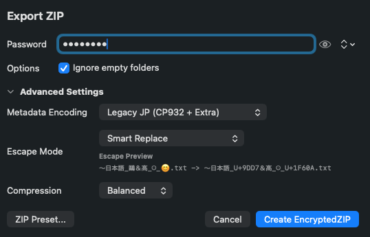
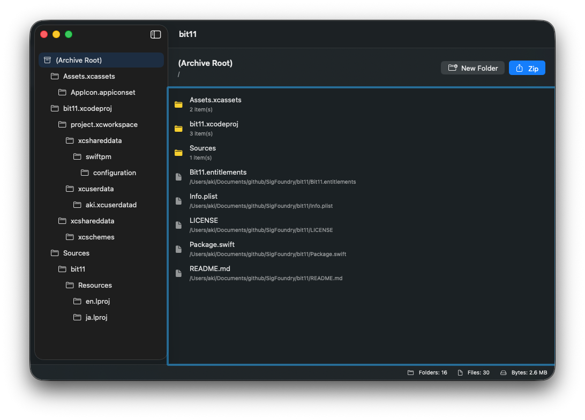

Finder-like archive editing
Build the folder tree first, drag files into place, rename safely, and reorganize structure before you export the final archive.
The Professional Compressor
bit11 is a focused ZIP authoring utility for macOS. Design the archive structure visually, choose the right metadata preset, and export with confidence for modern systems or legacy Japanese Windows.
Requires macOS. Place the signed installer at docs/downloads/bit11.dmg for GitHub Pages delivery.

Metadata compatibility
UTF-8 / CP932
Editing model
Finder-like
Export flow
Progress-aware
Target platforms
macOS to legacy Windows
Built for archive work that has consequences
When filename compatibility matters, a generic ZIP dialog is rarely enough. bit11 gives you a visual editing surface, saved archive structures, and deliberate export controls without turning the app into a noisy file manager.

Why bit11
bit11 is built for people who need ZIP files to survive real distribution targets, not just compress locally on one machine.
Build the folder tree first, drag files into place, rename safely, and reorganize structure before you export the final archive.
Switch between modern UTF-8 output and legacy Japanese Windows compatible modes with Unicode Path extra field behavior where appropriate.
Choose the destination first, then generate in the background with visible progress so larger exports feel deliberate rather than frozen.
Save archive structure JSON, reuse registered passwords, and keep recurring delivery workflows consistent across projects.
Download
Download the DMG, drag bit11 into Applications, and move straight into your secure notes workflow on macOS.